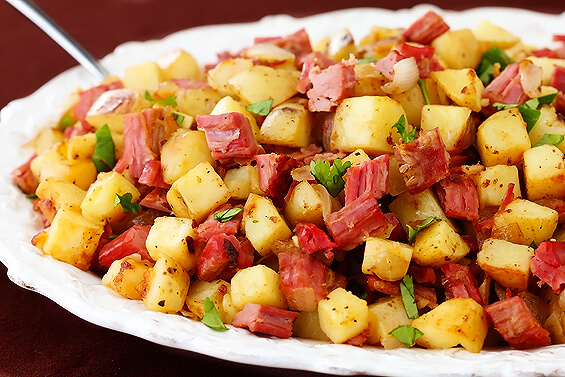

Corned Beef Hash
Servings: 4 to 6
Calories: 420
Prep Time: 25 mins

Ingredients
- 2-3 tablespoons unsalted butter
- 1 medium onion, finely chopped
- 2-3 cups cooked corned beef, finely chopped
- 2-3 cups cooked Yukon gold potatoes, chopped
Instructions
- In a large skillet, on medium heat, heat the butter until its melted and bubbling. Add the chopped onion and cook until translucent.
- Add potatoes and the corned beef. Increase the heat to medium high and press down on the mixture with a metal spatula.
- Cook the mixture until nicely browned. Flip sections over with the spatula and let the other side brown. Serve immediately.